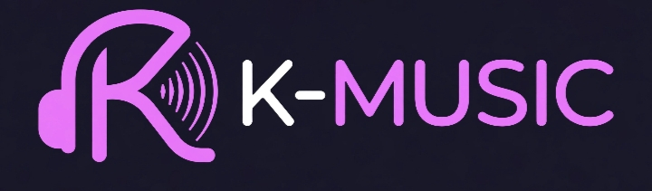

LANA DEL REY
Escuchar ♫TU MÚSICA, TU ESTILO, TU VIDA

Descubre canciones, álbumes y videos.
Aquí puedes escuchar tus álbumes y artistas favoritos.
Aquí puedes ver tus videos musicales favoritos.
Escucha las canciones de los álbumes destacados.
LANA DEL REY
BILLIE EILISH
SHIDDARTHA